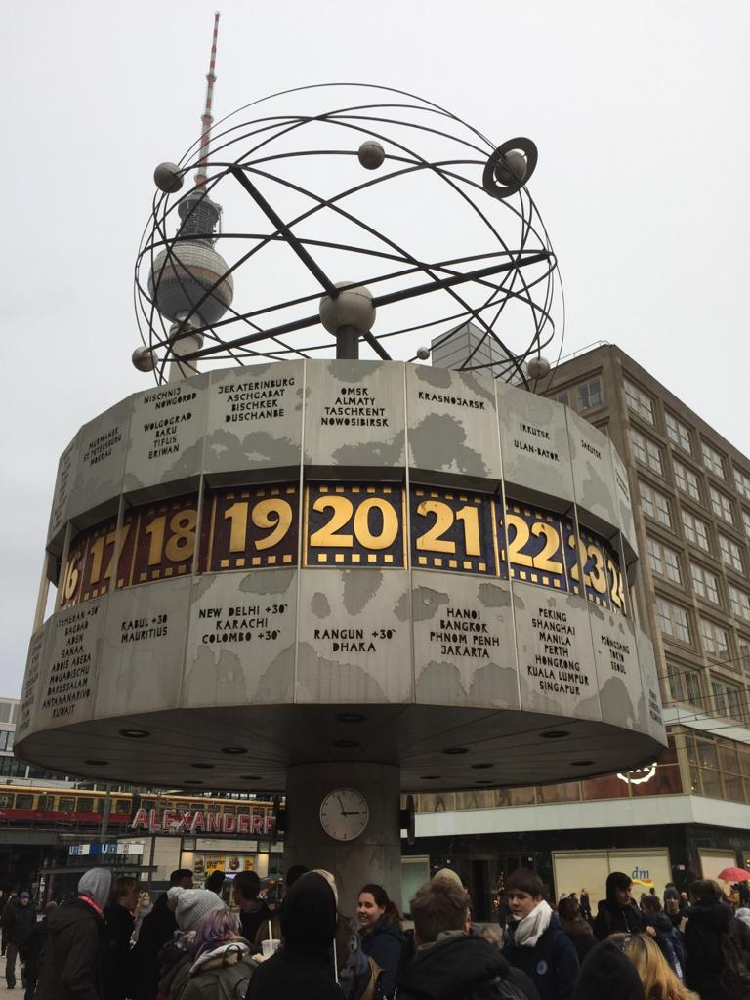

Travel to 🇩🇪 Germany (Deutschland)
⬅Previous by alphabetical order⬅ ➡️Next by alphabetical order➡️
⬅Previous by order of first visit⬅ ➡️Next by order of first visit➡️
Description
First visited in 2015. Second visit in 2018 for a day trip on foot to Kehl from Strasbourg. Third visit in 2019 to Berlin for Weihnachtsmarkt (Christmas markets).
Photos
Road sign in Kehl. |
![[https://en.wikipedia.org/wiki/Strasbourg_tramway Strasbourg tramway] station in [https://en.wikipedia.org/wiki/Kehl Kehl].](Photos/de_1.jpg) |
Strasbourg tramway station in Kehl. |
Border between Kehl and Strasbourg. |
Border between Kehl and Strasbourg. |
Currywurst at the christmas market in the Gendarmenmarkt. |
Milkshake that I ordered using German only from a Mcdonald's near Alexanderplatz. |
Christmas market in Alexanderplatz. |
|  | The World Clock (Weltzeituhr) in Alexanderplatz. |
Christmas market in Schloss Charlottenburg. |
Christmas market in Schloss Charlottenburg. |